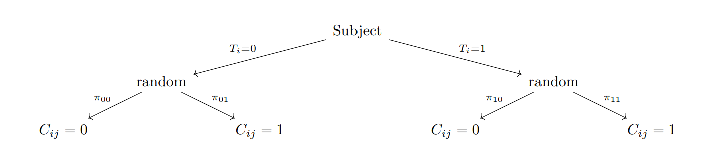

In Chapter 4: The Kappa Paradox we saw how adding parameters can increase the explanatory power of t-a-p models. This is an old idea. The Cohen kappa (Cohen, 1960) dates from the 1960s, and for large data sets can be seen as a variation of the Fleiss kappa, but where each rater has a parameter for random assigments. In the original paper, the formula is derived for two rates, but it can be expanded to any number of them. Dawid & Skene (1979) proposed a more ambitious rater model that entailed multiple coefficients per rater and a truth parameter for each subject.
A natural expansion of the t-a-p model assigns coefficients for each rater and subject. For example, we could assign a truth parameter \(t_i\) to each subject \(i\), and accuracy and random assignment parameters \(a_j\) and \(p_j\), respectively, to each rater \(j\). The latter requires that we have IDs for the raters. Generally, regression models like this are called hierarchical models or random effects models or fixed effects models, depending on the research tradition (As noted in Agresti (2003), p. 523 and Gelman & Hill (2006), p. 245, fixed versus random effects are not good descriptions for Bayesian models).
The three parameter t-a-p model is already hierarchical in the sense that the ratings for each subject are clustered for analysis. That’s how we create a distribution of agreement to compare with a binomial mixture. The hierarchical model we’re discussing in this chapter is a further extension of that idea, where we add parameters to the model, generally for one of two reasons. One reason is to increase model fit by accounting for variation in the data that is not explained by the three average parameters. The other reason is to obtain estimates for individual subjects or raters.
Individual rater parameters and subject truth values are of interest in many contexts. In educational psychology, we might want to know how well a teacher is able to assess student learning, and how well the students demonstrate knowledge or skill. In medical research, we might want to know how well a doctor is able to diagnose a disease, and how well the patients are responding to treatment. In machine learning, we may be concerned with the quality of training data drawn from human classifications. The ratings of consumer products on sites like Amazon or Yelp can be polluted with unfaithful reviews, so some means of detection is valuable. Likewise, individual subject truth parameters are valuable if we want to make decisions with the rating data, for example in a medical diagnosis, a pass/fail assessment of student learning, or using product ratings to make a selection.
2 Hierarchical Likelihood
A general characteristic of hierarchical models is that the probability of an individual rating being Class 1 can depend on the particular rater, subject, and possibly other factors. It will be useful to describe the likelihood of the ratings data in general. This can then be customized to t-a-p models and others we’ll encounter. Following Dawid & Skene (1979), I’ll use the notation
\[
Pr(\text{Rating is Class n | True class is m}) = \pi_{mn}
\] It may help to think of the \(\pi\)s as elements from a square matrix of size \(k\), the number of rating categories, where each row corresponds to a true class, and the elements in that row (the columns) describe a distribution of ratings for that class. A perfectly accurate set of ratings would be represented by the identity matrix. Because we want to individualize these probabilities to raters, we need to index them accordingly, and following Dawid & Skene again, I’ll use a superscript in parentheses, so that \(\pi_{01}^{(j)}\) is the probability that the \(j\)th rater assigns Class 1 when the true class is 0, and so on.
The JTB truth model is still assumed, so that each subject \(i\) has a latent true class \(T_i\). To develop the form of the likelihood equation, take a small example with a subject that receives two ratings of Class 1 and one rating of Class 0. The joint probability (likelihood) of the three ratings is the product of their individual probabilites due to the independence assumption. In practice, we don’t know the value of \(T_1\), so we write
\[
\begin{aligned}
Pr(\text{ratings}) &= \left( \pi_{11}^{(1)} T_1+ \pi_{01}^{(1)} \overline{T}_1 \right)\left( \pi_{11}^{(2)} T_1+ \pi_{01}^{(2)} \overline{T}_1 \right) \left( \pi_{10}^{(3)} T_1+ \pi_{00}^{(3)} \overline{T}_1 \right) \\
&= T_1\pi_{11}^{(1)} \pi_{11}^{(2)} \pi_{10}^{(3)} + \overline{T}_1 \pi_{01}^{(1)} \pi_{01}^{(2)}\pi_{10}^{(3)} \,\text{ since } T_1\overline{T}_1 = 0\\
& \approx t_1\pi_{11}^{(1)} \pi_{11}^{(2)} \pi_{10}^{(3)} + \bar{t}_1 \pi_{01}^{(1)} \pi_{01}^{(2)}\pi_{00}^{(3)} .
\end{aligned}
\] Recall that superscripts \((1), (2), \dots\) identify unique raters. The first subscript in \(\pi_{ij}\) is the subject’s true class, and the second is the rating assigned. Since there’s a common true class \(T_1\) for all the ratings (binary 0 or 1), the algebraic expansion of the first line simplifies to one of the two possibilities in the second line. We have a choice here, to either guess the values of the binary truth values \(T_i\) or downgrade to a probability \(t_i\) of subject \(i\) being Class 1, in which case we get the last line.
A general likelihood formula for probabilistic \(t_i\) is
which can be understood as multiplying together a likelihood factor for each subject \(i\). These factors are of the form illustrated above in the simple example. Each subject-specific factor is a sum of two products; one for the possibility that the subject might be Class 1 and one for Class 0. These term-products over \(j,k_j\) multiply \(\pi\) coefficients for each rater \(j\) on subject \(i\), with the coefficient chosen for the class \(k_j\) assigned by the rater to that subject. This idea can be extended beyond binary classifications, as in Dawid & Skene (1979), which is described in more detail in Section 5.1.
When applied to the t-a-p model, the generic \(\pi\) parameters become
\[
\begin{aligned}
\pi_{00} &= Pr(\text{assigned Class }0|\text{true class }0) = a + \bar{a}\bar{p} \\
\pi_{01} &= Pr(\text{assigned Class }1|\text{true class }0) = \bar{a}p\\
\pi_{10} &= Pr(\text{assigned Class }0|\text{true class }1) = \bar{a} \bar{p} \\
\pi_{11} &= Pr(\text{assigned Class }1|\text{true class }1) = a + \bar{a}p.\\
\end{aligned}
\tag{2}\]
The \(j\) indicies are suppressed here for clarity, but in the hierarchical model, each rater has a set of these \(\pi\) coefficients. Applying these t-a-p model assumptions to the likelihood model Equation 1 gives us a computable formula. We can estimate parameters using an EM-type approach, by extending the method describe in Chapter 2 to individual rater parameters.
For a discussion on the usefulness of log likelihood as a measure of model fit, see Chapter 6. There we see it’s useful to normalize likelihood as entropy, measured in bits per rating. Maximizing likelihood is the same as minimizing model entropy. To compute the log likelihood as a comparable entropy in bits per rating with the tapModel package, use bits_per_rating(rating_params). Also see the examples for use cases.
3 Direct E-M Estimation
In the hierarchical case, the E-step, which is to estimate \(t_i\) for each subject, is the same as it is for the three-parameter model, except that we’ll use estimates for individual rater parameters \(a_j\) and \(p_j\), instead of the average \(a\) and \(p\), as well as some initial estimate for \(t_i\). We’ll take our cue from Equation 1, and use Bayes’ Rule to write
where the asterisk denotes the updated parameter. The denominator is the additive mixture of the likelihoods of seeing the evidence given that the true class is 1 or 0, as denoted in the first subscript. This step can be accomplished with tapModel::estimate_ti().
In the usual Bayesian terminology, \(Pr(T_i = 1)\) is the “prior distribution” of the probability that subject \(i\) is true. We have choices for that distribution. We could dodge the question by just setting that factor to 1 as an improper distrbution. Or we could use the uniform (uninformative) distribution \(t = .5\) for all subjects. The most informative prior is to use the previous estimate for \(t_i\), but this can be counter-productive if we get off to a bad start, because the prior will keep pulling the estimate back to the lousy first guess. Informally, I’ve found that a good compromise is to use the average \(t\) over all subjects from the current estimation as a good prior. That’s the way the formula is written with \(Pr(T_i = 1) = t_{avg}\).
It’s important to note that we’re not maximizing likelihood at this step. If we were, a glance at Equation 1 shows that for each subject, one of the two terms is likely to be larger than the other, in which case we could maximize likelihood by rounding \(t_i\) to one or zero.
The maximization step of the E-M loop is similar to the average parameter case described in Chapter 2. Suppose that we estimate the \(t_i\) parameters as just described, and that we have rater IDs in the data set. Then for each rater we can create a confusion matrix of the ratings they assigned versus the estimated true class probabilities. From Chapter 1 we have the following average rates in the table, where the average true Class 1 rate \(t\) is taken over a particular rater \(i\), who has parameters \(a_j\) and \(p_j\) are now specific to rater \(j\).
Table 1: The confusion matrix for a combination of raters \(R\) and Class 1 ratings \(k\) applied rater \(j\). Terms in parentheses are inaccurate ratings. TPP = true positive proportion, etc.
True C1
True C0
Classified C1
TPP \(= ta_j + (t\bar{a}_jp_j)\)
FPP \(=(\bar{t}\bar{a}_jp_j)\)
Classified C0
FNP \(=(t\bar{a}_j\bar{p}_j)\)
TNP \(=\bar{t}a_j + (\bar{t}\bar{a}_j\bar{p}_j)\)
We can populate the estimated probabilities in the confusion matrix in Table 1, from empirical values, such as $ TPP t_iC_{ij}/N$, which is the average match between the true class and the rating. The other three entries can be obtained similarly.
We can then use algebra to solve for estimates of \(a_j\) and \(p_j\) parameters, with
\[
\begin{aligned}
a_j & \approx \text{TPR}/t - \text{FPR}/\bar{t} \\
p_j & \approx \frac{\text{FPR}}{\bar{a}_j\bar{t}} \, ,
\end{aligned}
\] where \(t\) is averaged over the subjects being rated by rater \(j\).
To illustrate, we’ll generate some ratings with known parameters.
Table 2: Randomly generated ratings with nine raters having accuracy .1 through .9, using the E-M algorithm to reconstruct the parameters.
rater_id
c_j
a_j
p_j
bias
1
0.44
0.15
0.44
0.02
3
0.52
0.26
0.55
0.13
2
0.44
0.39
0.45
0.03
4
0.48
0.39
0.52
0.10
6
0.40
0.45
0.38
-0.04
5
0.42
0.50
0.42
0.00
7
0.44
0.65
0.48
0.05
8
0.36
0.84
0.04
-0.38
9
0.46
0.93
0.99
0.57
There is a lot of detailed information in Table 2 that we seem to get for almost free. We’ll continue this discussion in Chapter 6: Assessing Model Fit.
4 MCMC Estimation
We can use Bayesian models using Markov Chain Monte Carlo (MCMC) algorithms to estimate parameters, as we did in Chapter 4, but this time for the whole parameter set that includes individual raters and subjects. The provided functions end with _mcmc to differentiate them from the non-Bayesian version. The specifications are written in Stan code, which requires installation of library(cmdstanr). In addition to richer output in the form of parameter draws, MCMC methods can easily be extended, for example to use partial pooling (see the section below on that topic).
An example using fit_ratings_mcmc() is given in the next section. By default, this function first runs the EM algorithm described in the previous section to provide starting estimates for the MCMC algorithm, which speeds it up considerably.
The Stan script substitutes Equation 2 computations into Equation 1. Stan works with log likelihood, so the products become sums.
View Stan code
//// A t_i-a_j-p_j model// The development is described in the hierarchical chapter. It collapses// T_i (binary) into t_i (probability) at the subject level. Compare this to// the model (t_i)-a_j-p_j.stan, which collapses right away, so that each// rater applies the probability independently instead of at the subject level.// Learn more about model development with Stan at://// http://mc-stan.org/users/interfaces/rstan.html// https://github.com/stan-dev/rstan/wiki/RStan-Getting-Started// The ratings summary (number of 1-ratings per case) and descriptivesdata {int<lower=0> N; // number of ratingsint<lower=0> S; // number of subjects being ratedint<lower=0> R; // number of unique ratersarray[N] int rating; // array of binary ratingsarray[N] int subject_index; // the ID of the subject for the ith rating. Should be in 1:Sarray[N] int rater_index; // the ID of the rater for the ith rating. Should be in 1:Rarray[R] real<lower = 0, upper = 1> p_est;array[R] real<lower = 0, upper = 1> a_est; // rater random parameterarray[S] real<lower = 0, upper = 1> t_est; // rater random parameterreal t_prior_sd;real a_prior_sd;real p_prior_sd;int<lower=0, upper=1> use_uniform_t; // 1 if uniform(0, 1) is used for t, 0 otherwiseint<lower=0, upper=1> use_uniform_a; // 1 if uniform(0, 1) is used for a, 0 otherwiseint<lower=0, upper=1> use_uniform_p; // 1 if uniform(0, 1) is used for p}// The parameters to estimateparameters {// random effectsarray[R] real<lower = 0, upper = 1> p;array[R] real<lower = 0, upper = 1> a; // rater random parameterarray[S] real<lower = 0, upper = 1> t; // the estimated true class probability for subjects}// compute the log pis for each ratertransformed parameters {array[R] real lpi_00; // Pr(Assigned class = 0 | True class = 0)array[R] real lpi_01;array[R] real lpi_10;array[R] real lpi_11;// for efficiency precompute the logsfor(i in1:R){ lpi_00[i] = log(1-(1-a[i])*p[i]); lpi_10[i] = log((1-a[i])*(1-p[i])); lpi_01[i] = log((1-a[i])*p[i]); lpi_11[i] = log(a[i] + (1-a[i])*p[i] ); }}// The model to be estimated.model {// accumulation of log likelihood by subjectarray[S] real sub_00 = rep_array(0.0, S);array[S] real sub_01 = rep_array(0.0, S);array[S] real sub_10 = rep_array(0.0, S);array[S] real sub_11 = rep_array(0.0, S);int rater;int subject;// use either uniform distribution or restricted normalsif (use_uniform_t == 1) { t ~ uniform(0, 1); } else { t ~ normal(t_est, t_prior_sd); }if (use_uniform_a == 1) { a ~ uniform(0, 1); } else { a ~ normal(a_est, a_prior_sd); }if (use_uniform_p == 1) { p ~ uniform(0, 1); } else { p ~ normal(p_est, p_prior_sd); }// log likelihood contribution from ratersfor(i in1:N) { rater = rater_index[i]; // rater who assigned this rating subject = subject_index[i];if(rating[i] == 0){ // assigned class 0 sub_00[subject] += lpi_00[rater]; sub_10[subject] += lpi_10[rater]; } else { // assigned class 1 sub_01[subject] += lpi_01[rater]; sub_11[subject] += lpi_11[rater]; } }// accumulate by subjectreal eps = 1e-10; // hack to avoid log(0)for(i in1:S){target += log_sum_exp(log(t[i] + eps) + sub_11[i] + sub_10[i], log(1-t[i] + eps) + sub_01[i] + sub_00[i]); }}
5 Machine Learning Models
There are two traditions in thinking about rater statistics. The kappa approach is to imagine that the ratings can be chance-corrected to account for ratings that are accidentally correct. This is done via some choice of chance correction, which leads to the “zoo” of kappas, as described in Chapter 3. The second approach is generative in the sense that each step of the rating process is modeled in a Markov chain, meaning a sequence of probabilistic choices that lead to a rating. The t-a-p models are generative. Since “generative” is now associated with artificial intelligence, I’ll refer to these as Machine Learning (ML) models, which is a reference to the community that studies them. Training an algorithm on a large data set of annotations is a common ML task, and it’s natural to want to understand the qualities of those annotations. The ML community is familiar with the kappa approach, but I’m not sure how much the reverse is true. Part of my goal in creating this website is to translate between the two modes of thought.
For an overview of rater statistics from the ML tradition, see Paun et al. (2018), where the authors describe and empirically test six methods. I’ll talk about two of these here. Both of these methods assume latent true classes for the subjects being rated, so they implicitly adopt something like a Justified True Belief approach as described in Chapter 1.
In Paun et al. (2018) the methods are described as “pooled,” meaning estimation of average parameters only, “unpooled”, meaning estimating individual rater and subject parameters, or “partially pooled,” which is a combination of the two approaches designed to take advantage of the magic of Stein Estimators. For a good treatment of this idea in the Bayesian context see McElreath (2020).
5.1 Dawid & Skene
Dawid & Skene (1979) published what may be the first hierarchical (unpooled) moded for estimating subject and rater coefficients. In the abstract they describe the problem being addressed.
In compiling a patient record many facets are subject to errors of measurement. A model is presented which allows individual error-rates to be estimated for polytomous facets even when the patient’s “true” response is not available.
Here, “polytomous facets” means more than two possible classifications. For this discussion, I’ll only consider binary classes. Even though “true” is in scare quotes above, the model assumes that true classes \(T_i\) exist. As we will see from the statistical approach here, the reference to error rates does not mean that Dawid & Skene estimates rater accuracy, on the rater error rates. Since some correct answers are inaccurate (at least in the t-a-p model), the estimated rater parameters contain both accurate and inaccurate matches between the assigned and true classes of subjects. In short, Dawid & Skene’s approach estimates rater distributions of assigned classes. Comparing to the classical rater agreement statistics, it’s perhaps closest to the Cohen kappa (Cohen, 1960), which was described in Chapter 3. Cohen’s statistic allows each rater to have a response pattern, which is used to estimate matches at random. One additional complication with Dawid & Skene’s method is that they consider multiple ratings from a rater being assigned to a single subject. This complicates the notation quite a bit, and I’ll simplify it to assume one rating per rater per subject.
The generation of ratings expresses the model in terms of an individual rater. For example, with \(k=2\) categories a rating looks like the following.

Dawid & Skene sampling model for a single rating and k = 2
In the paper describing the method, equation 2.7 gives the likelihood of the observations. For consistency with the rest of my treatment, I’ll change the notation to correspond to the t-a-p conventions, and simplify to one observation per rater. So as before \(C_{ij}\) means the annotated classication of rater \(j\) of subject \(i\). Now we’ll allow \(C_{ij} \, \epsilon \{1,\dots,k\}\), corresponding to \(k\) possible classifications. The \(K=2\) case can be compared to what we’ve already done.
You’ll recognize from earlier the rater distributions \(\pi_{kl}^{(j)} = Pr(\text{Rater j assigns Class l}|\text{true Class is k})\). The indicator function \(I(C_{ij}=l)\) is binary, being one when the condition is true (the assigned class is \(l\)) and zero otherwise. So only one of the sub-products in the innermost loop will be something other than 1, and we can rewrite the likelihood as
The innermost products are grouped by the assigned class, which is indexed by the subject \(i\) and rater \(j\). As the authors note, this describes the likelihood of \(N_s\) independent samples from a mixture of multinomial distribution with weights \(t_1 \dots t_k\). The multinomial coefficients are all factored out and discarded here, since we don’t need them to maximize likelihood.
The formulation of Equation 3 is the same as what we derived in Section 2 before applying the t-a-p assumptions. See Equation 1; it’s the same thing except for the binary case. The application of the t-a-p model assumptions found in ?@eq-likelihood3 reparameterizes the \(\pi\) coefficients and reduces from three per rater (since the four \(\pi\)s sum to one, there are only three free variables per rater) plus the \(t\) parameter to two per rater. So the basic hierarchical t-a-p model has one fewer coefficient per rater. Dawid & Skene can be translated into a hierarchical t-a-p model along the lines of the average model in Chapter 4 where the accuracy and random assignment parameters split to be conditioned on the true class. It’s possible to use the Dawid & Skene approach while retaining a parameter for rater accuracy (two of them in this case), e.g. with a Stan script.
Bob Carpenter’s Stan code from Paun et al. (2018) is here:
View Stan code
data {int<lower=1> J; //number of annotatorsint<lower=2> K; //number of classesint<lower=1> N; //number of annotationsint<lower=1> I; //number of itemsint<lower=1,upper=I> ii[N]; //the item the n-th annotation belongs toint<lower=1,upper=J> jj[N]; //the annotator which produced the n-th annotationint y[N]; //the class of the n-th annotation}transformed data {vector[K] alpha = rep_vector(1,K); //class prevalence priorvector[K] eta = rep_vector(1,K); //annotator abilities prior}parameters {simplex[K] pi;simplex[K] beta[J,K];}transformed parameters {vector[K] log_q_c[I];vector[K] log_pi;vector[K] log_beta[J,K]; log_pi = log(pi); log_beta = log(beta);for (i in1:I) log_q_c[i] = log_pi;for (n in1:N) for (h in1:K) log_q_c[ii[n],h] = log_q_c[ii[n],h] + log_beta[jj[n],h,y[n]];}model {for(j in1:J)for(h in1:K) beta[j,h] ~ dirichlet(eta); pi ~ dirichlet(alpha);for (i in1:I)target += log_sum_exp(log_q_c[i]);}generated quantities {vector[K] q_z[I]; //the true class distribution of each itemfor(i in1:I) q_z[i] = softmax(log_q_c[i]);}
See p. 573 of Paun et al. (2018) for a “partially pooled” variation of the Dawid & Skene method.
This structure [uses] information about the population to improve estimates of individuals by regularizing toward the population mean. This is particularly helpful with low count data as found in many crowdsourcing tasks
5.2 MACE
The MACE algorithm is newer rater aggreement approach from the machine learning community. It was introduced in Hovy et al. (2013), where we find a description of the model’s annotation (rating) generation process.
We assume that an annotator always produces the correct label when he tries to. […] Our model generates the observed annotations as follows: First, for each instance \(i\), we sample the true label \(T_i\) from a uniform prior. Then for each annotator \(j\), we draw a binary variable \(S_{ij}\) from a Bernoulli distribution with parameter \(1 - \theta_j\). \(S_{ij}\) represents whether or not an annotator \(j\) is spamming on instance \(i\). We assume that when an annotator is not spamming on an instance, i.e. \(S_{ij}=0\), he just copies the true value to produce annotation \(A_{ij}\). If \(S_{ij}=1\), we say that the annotator is spamming on the current instance, and \(A_{ij}\) is sampled from a multinomial with parameter vector \(\xi_j\). Note that in this case the annotation \(A_{ij}\)does not depend on the true label \(T_i\).
It’s straightforward to translate this into the t-a-p notation., where we assume there are only two annotations (ratings), a 0 or 1.
The subjects are indexed by \(i = 1 \dots N\) and raters/annotators indexed by \(j = 1 \dots M\) in the MACE description. For t-a-p, we’re using \(N_s\) for number of subjects and \(N_r\) for raters, and a total of \(N\) ratings.
\(T_i\) is the true class in both descriptions
\(C_{ij}\), the set of \(N\) ratings/classifications/annotations in MACE becomes \(A_{ij}\).
\(A_{ij}\) in the t-a-p model is the binary indication of an accurate rating, which is \(\bar{S}_{ij} = 1 - S_{ij}\) in MACE. Spamming is the opposite (complement) of accuracy.
Average rater accuracy \(a_j\) is \(\theta_j\) in the MACE paper.
The random assignment probability for a rater \(p_j\) is \(\xi_j\) in MACE.
The MACE algorithm captures all the elements of Justified True Belief, with latent truth and rater accuracy, just slightly reformulated. So MACE is the same as the hierarchical t-a-p model. I didn’t know any of this when I started developing the t-a-p model from the kappa tradition, but obviously the credit for invention goes to the MACE authors, who published this in 2013.
The likelihood function given in Hovy et al. (2013) can be translated into the t-a-p model notation as
where I’ve recast the product into the more compact \(\pi\) coefficients from Dawid & Skene, and assume binary classifications. All I can figure is that the first line in the paper has a typo reversing the outer sum with the product over \(i\), and it should be written as
The second line is the earlier derivation, matching the Dawid & Skene likelihood. The next step is to apply the t-a-p reparameterization to the \(\pi\) coefficients. Unlike the Dawid & Skene paper, there’s no derivation of the likelihood formula, and the meaning of the sum over \(T\) and \(A\) is not clear. I assume it’s over the values that these parameters can take, not the empirical vectors of values themselves. In any case, the likelihood is expressed as a sum of products in Equation 4, which is different from the t-a-p derivation above, which is a product of sums.
Bob Carpenter’s Stan code for implenting MACE (Paun et al., 2018) matches the Equation 5 version. I have changed the array declarations to conform with the latest version of Stan (which broke old code) and added comments to annotate how the variables match to the t-a-p nomenclature. This code, as MACE is, is designed for multiple classes (more than 2), but I’ve described in the binary case. In that case, the algorithm assumes initially that \(t=.5\) as a way to generate the parameters we call \(a_j\) and \(p_j\), which then allow refined estimation of \(t_i\).
View MACE Stan code
data {int<lower=1> J; //number of annotatorsint<lower=2> K; //number of classesint<lower=1> N; //number of annotationsint<lower=1> I; //number of itemsint<lower=1,upper=I> ii[N]; //the item the n-th annotation belongs toint<lower=1,upper=J> jj[N]; //the annotator which produced the n-th annotationint y[N]; //the class of the n-th annotation}transformed data {vector[K] alpha = rep_vector(1.0/K,K);vector[K] eta = rep_vector(10,K);}parameters {simplex[K] epsilon[J];real<lower=0, upper=1> theta[J];}transformed parameters {vector[K] log_q_c[I];vector[K] log_alpha; log_alpha = log(alpha);for (i in1:I) log_q_c[i] = log_alpha;for (n in1:N) {for (h in1:K) {int indicator = (y[n] == h); log_q_c[ii[n],h] = log_q_c[ii[n],h] + log( theta[jj[n]] * indicator + (1-theta[jj[n]]) * epsilon[jj[n],y[n]] ); } }}model {for(j in1:J) { epsilon[j] ~ dirichlet(eta); theta[j] ~ beta(0.5,0.5); }for (i in1:I)target += log_sum_exp(log_q_c[i]);}generated quantities {vector[K] q_z[I]; //the true class distribution of each itemfor(i in1:I) q_z[i] = softmax(log_q_c[i]);}
6 Groupthink
In the discussion of the Fleiss kappa in Chapter 3, I noted that the assumption that \(p=t\) might imply that knowlege about the true class rate affects rater assignments, which could violate the independence assumption. For example, a rare condition might be ignored because it’s improbable. This knowlege leakage is inevitable with human raters, and the ratings may be better understood as independent conditional on some set of shared beliefs and contexts. Suppose we push this idea by assuming that each rater’s random assignment rate for Class 1 for each subject is the prevalence of ratings for that subject. This could happen if raters talk to each other and take a straw poll before assigning their ratings. In this case, \(p\) can be indexed to subjects as \(p_i = c_i\), so we could call the hierarchical model \(t_i-a_j-c_i\). This is the Fleiss assumption, but instead of applied to the whole set of ratings, it’s within each subject. If a rater classifies inaccurately, the class assignment is influenced by the group’s collective opinion, which we might call groupthink.
The effect of this non-independence is a dramatic reduction in our ability to estimate rater accuracy. A simple way to test this is to modify the average t-a-p model to inject the average Class 1 rate into the \(p_j\) parameter (so \(p_j = c_i\)) and then find the maximum likelihood.
View Stan code
//// A Groupthink t_i-a_j-c_i model//// The development is described in the hierarchical chapter under Groupthink// Learn more about model development with Stan at://// http://mc-stan.org/users/interfaces/rstan.html// https://github.com/stan-dev/rstan/wiki/RStan-Getting-Started// The ratings summary (number of 1-ratings per case) and descriptivesdata {int<lower=0> N; // number of ratingsint<lower=0> S; // number of subjects being ratedint<lower=0> R; // number of unique ratersarray[N] int rating; // array of binary ratingsarray[N] int subject_index; // the ID of the subject for the ith rating. Should be in 1:Sarray[N] int rater_index; // the ID of the rater for the ith rating. Should be in 1:Rarray[S] real p; // average number of Class 1 ratings for subject i}// The parameters to estimateparameters {// random effectsreal<lower = 0, upper = 1> a; // rater random parameterreal<lower = 0, upper = 1> t; // the estimated true class probability for subjects}// The model to be estimated.model {// accumulation of log likelihood by subjectarray[S] real sub_00 = rep_array(0.0, S);array[S] real sub_01 = rep_array(0.0, S);array[S] real sub_10 = rep_array(0.0, S);array[S] real sub_11 = rep_array(0.0, S);int subject;real lpi_00; // Pr(Assigned class = 0 | True class = 0)real lpi_01;real lpi_10;real lpi_11;real p_;real eps = 1e-10; // hack to avoid log(0)// priors for average params t ~ uniform(0, 1); a ~ uniform(0, 1);// log likelihood contribution from ratersfor(i in1:N) { subject = subject_index[i]; p_ = p[subject]; // from the data, equals avg class 1 rating for subject// likelihoods lpi_00 = log(1-(1-a)*p_ + eps); lpi_01 = log((1-a)*(1-p_) + eps); lpi_10 = log((1-a)*p_ + eps); lpi_11 = log(a + (1-a)*p_ + eps);if(rating[i] == 0){ // assigned class 0 sub_00[subject] += lpi_00; sub_10[subject] += lpi_10; } else { // assigned class 1 sub_01[subject] += lpi_01; sub_11[subject] += lpi_11; } }// accumulate by subjectfor(i in1:S){target += log_sum_exp(log(t + eps) + sub_11[i] + sub_10[i], log(1-t + eps) + sub_01[i] + sub_00[i]); }}
The simulation here is an easy problem to solve with all three of the t-a-p parameters set to .7. The model estimates for accuracy are around .06 instead of .7.
Simulation results with t-a-p parameters set to .7 and using the groupthink assumption that p_j = c_i. The density of the estimates for average accuracy are plotted with the true value as a dashed line.
The lesson here is that non-independence, where the raters have a consensus-building process or just a per-subject referent, makes estimating rater accuracy difficult. For more on testing for non-independence, see Chapter 6.
7 Invariant Scales
Educational testing has evolved methods like Item Response Theory (IRT) for simultaneously estimating student ability and test item difficulty. We can compare the standard three-parameter model to the t-a-p model by naming the parameters analogously. Assume it’s a binary (True/False) test for simplicity. For a given test item (think: subject to be rated) there is a true answer \(T_i\) and test-taker (rater) classification \(C_{ij}\). Each test-taker \(j\) has an intrisic ability to get items correct \(\alpha_j\), which is a real value on \((-\infty,+\infty)\), usually assumed to be normally distributed over a population. Each test item has an intrisic bias difficulty \(d_i\) on the same (invariant) scale. The difficulty works against ability, so we’ll be interested in \(a_j - d_i\) as a chance of getting the correct answer. The probability of getting the correct answer depends on both the test-taker (rater) and the item (subject), with
where \(s_i\) a steepness parameter for the sigmoid, called discrimination. This allows the slope of the logistic curve to vary at its steepest point by test item.
In practice, this condition is fitted using a binomial regression on the log-odds scale, so that
\[
\log \left(\frac{Pr[C_{ij} = T_i]}{1 - Pr[C_{ij} = T_i]}\right) = s_i(\alpha_j - d_i).
\] In one variation, there is a probability of getting the correct answer \(q_i\) by chance, which depends on the item (subject) rather than on the test-taker. I’ll use \(q\) instead of \(p\) because we used \(p_j\) for the chance of randomly picking Class 1 for inaccurate ratings, which is different from randomly picking the true class. Rather than the hard switch of a Bernoulli trial (i.e. a uniform distribution with a cut-off to determine 0 or 1) to determine an accurate response, as in the t-a-p model, IRT uses a sigmoid function as a soft switch between accurate and inaccurate classification. The simplest version, without the difficulty and discrimination parameters, looks like
Where \(\alpha_j\) would be estimated as a log-odds latent variable. When the latent variable is a large negative number (low ability), the probability of a correct response tends to \(q_i\), pure guessing. We can compare this formulation to the three-parameter t-a-p model, (suppressing the indices) as
\[
\begin{aligned}
q + \bar{q} a &= t\bar{a}p + \bar{t}\bar{a}\bar{p} + a.\\
\end{aligned}
\] The key idea from IRT that we can apply to the t-a-p models is the use of latent scales instead of direct probabilities for the parameters. If we want to consider that some subjects are more difficult to classify than others, we could follow the IRT model and use a difficulty parameter \(d_i\) for each subject, so that the probability of correct classification is something like \(a_j - d_i\). That won’t work if \(a\) and \(d\) are both probabilities, because we’ll get negative numbers if \(d_i > a_j\). The IRT solution is to use a sigmoid function like the logistic above to map these parameters on the real line as latent variables. The philosophical cost is that we must assume that they have the same dimension, which permits scalar operations.
Is difficulty the same thing as accuracy? In some cases this seems justified. Suppose we’re asking raters to classify images of dogs or non-dogs (like in a Captcha). There are ways in which images can be generally degraded, e.g. being out of focus or only containing part of the dog in the picture. In this case, the difficulty of the image is would seem to decrease accuracy in a plausibly general manner.
This idea can be generalized. If raters are college professors reporting on the quality of student writing, we might suppose that accuracy is related to how long a professor has been teaching and perhaps to their academic discipline. Maybe English professors can judge writing better than Engineers. Using latent scales, we could propose a model where accuracy is affected by (1) individual rater ability to judge writing \(a_j\), (2) the student being rated \(d_j\), and (3) the rater’s experience, measured in years \(y_j\). Then the accuracy parameter depends on both the rater and subject as
\[
a_{ij} = \frac{1}{1 + e^{-(\alpha_j - \delta_i + \eta y_j)}},
\] where \(\alpha\) is the latent accuracy parameter, \(\delta\) is the difficulty latent parameter, and \(\eta\) (eta, for experience) is a parameter that measures the effect of experience on accuracy and converts years to the same units as the other parameters.
8 Partial Pooling
Another feature of the latent scale for parameters is that we can easily combine average and individual effects. For example, we can use the average accuracy of all raters to estimate the accuracy of a new rater. This is called “partial pooling” in the Bayesian literature, and it works by estimating the average parameters from a large data set and then using them to estimate the individual parameters. The idea is that we can borrow strength from the population to improve our estimates of individual parameters. The simplest case looks like
\[
a_j = \frac{1}{1 + e^{-(\alpha + \alpha_j)}},
\] where \(a\) is the average accuracy of all raters, and the \(a_j\) parameters are considered “random effects” in that they are given a prior distribution that is also fitted by the MCMC algorithm. A common choice would be \(a_j \epsilon N(0, \sigma_a)\), where \(\sigma_a\) is a standard deviation parameter that is also estimated. This is a normal distribution with mean 0 and standard deviation \(\sigma_a\). The \(a_j\) parameters are then estimated as deviations from the average accuracy \(a\), and the maximum likelihood estimation will determine how much of the variance in the \(a_j\) parameters is due to the average accuracy. This is a common approach in Bayesian statistics, and it works well when the data is normally distributed. The t-a-p model can be modified to include partial pooling for both the \(a_j\) and \(p_j\) parameters.
References
Agresti, A. (2003). Categorical data analysis (Vol. 482). John Wiley & Sons.
Cohen, J. (1960). A coefficient of agreement for nominal scales. Educational and Psychological Measurement, 20(1), 37–46.
Dawid, A. P., & Skene, A. M. (1979). Maximum likelihood estimation of observer error-rates using the EM algorithm. Journal of the Royal Statistical Society: Series C (Applied Statistics), 28(1), 20–28.
Gelman, A., & Hill, J. (2006). Data analysis using regression and multilevel/hierarchical models. Cambridge university press.
Hovy, D., Berg-Kirkpatrick, T., Vaswani, A., & Hovy, E. (2013). Learning whom to trust with MACE. Proceedings of the 2013 Conference of the North American Chapter of the Association for Computational Linguistics: Human Language Technologies, 1120–1130.
McElreath, R. (2020). Statistical rethinking: A bayesian course with examples in r and stan (2nd ed.). Chapman; Hall/CRC.
Paun, S., Carpenter, B., Chamberlain, J., Hovy, D., Kruschwitz, U., & Poesio, M. (2018). Comparing bayesian models of annotation. Transactions of the Association for Computational Linguistics, 6, 571–585.